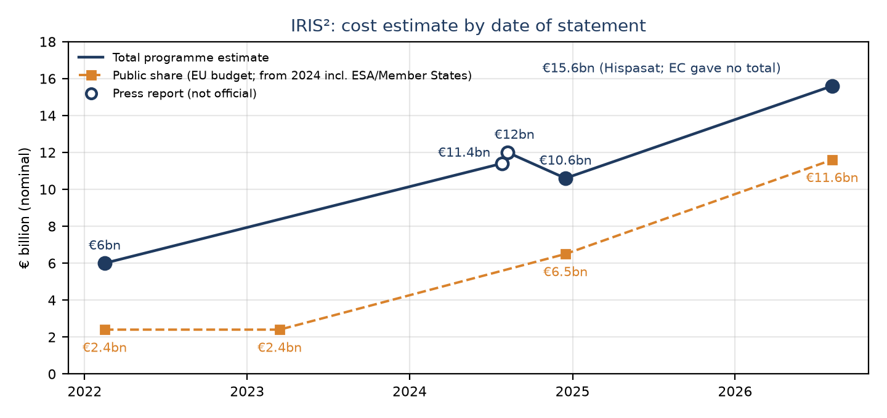
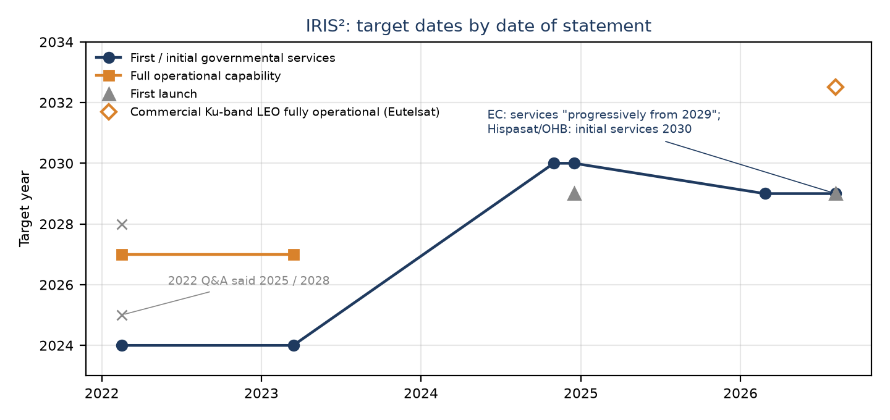
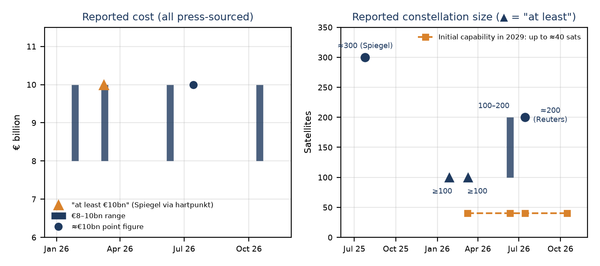

IRIS² and SATCOMBw Stage 4: How Cost and Schedule Have Evolved
A timeline of cost estimates and deployment targets for the EU’s secure connectivity constellation (IRIS²) and Germany’s Bundeswehr LEO satcom programme (SATCOMBw Stufe 4) | Status as of November 9, 2026
Prepared for Paul. Citations in square brackets are clickable and map to the numbered References. Each row gives the figure as it was stated on that date, not with hindsight. Items marked [UNVERIFIED] come only from press reports, analysts or unnamed sources, with no official confirmation found. All amounts are nominal euros as stated; none are inflation-adjusted.
1. Executive summary
- IRIS² has gotten bigger, costs more, and is later than first planned, though not as late as the 2024 reset implied. The Commission’s Feb 2022 proposal priced the system at about €6bn total, with €2.4bn from the EU budget, and targeted first services by 2024 and full operational capability (FOC) by 2027 [1,2]. The concession signed in Dec 2024 was €10.6bn (€6.5bn public including €550m from ESA, and more than €4bn private) for 290 satellites, with services by 2030 [8,9,6]. The Aug 2026 “Rendezvous 1” agreement added 66 satellites (348 in total) and confirmed first launches in 2029. The Commission calls this bringing them forward, although ESA had already envisioned a 2029 first launch in Dec 2024 [8]. Hispasat puts total investment at more than €15.6bn (€11.6bn public, up to €4bn private) [13,16]. Measured against the 2022 baseline, total cost is up about 2.6×, the public share about 4.8×, and first service has slipped about 5–6 years.
- Why IRIS² changed. (1) Industry bids in 2024 came in near €11.4–12bn, roughly double the Commission’s estimate. Airbus and Thales Alenia Space stepped back from leading the consortium [23,24,25]. (2) The Commission then optimised scope and governance, and the private side took on more of the cost [6,25]. (3) In 2026 the war-driven defence requirements led the Commission to add a 66-satellite military Ka-band layer, aiming for 60% more secure governmental capacity in the EU [13,14]. The added cost is to come from the 2028–2034 MFF and from Member States, so it is not yet appropriated [13].
- The 2029 date has a narrow meaning. It refers to first launches and the first layer (≥66 Mil-Ka satellites) built by Airbus and Thales Alenia Space [20,21]. The 264 dual Ku/Ka satellites from Aerospacelab start launching in 2030 [21,30]. Eutelsat expects its commercial Ku-band LEO service to be fully operational only by mid-2032 [18]. Hispasat and OHB still describe initial services in 2030 [16,19].
- SATCOMBw Stage 4 is still a planned programme and no contract has been awarded. No official cost figure has been published by BMVg or BAAINBw in any document I could find. Every figure comes from press reports that attribute it to the ministry or Space Command. Those figures have stayed in a €8–10bn range since Jan 2026 [38,42,44,31], with some reports of about €10bn or “at least €10bn” [40,47]. Reported size has moved from about 300 small satellites (Jul 2025) [36] to at least 100 (Jan–Apr 2026) [38,43], and then about 200 or a large three-digit number at full build-out [47,44]. The 2029 initial-capability target (up to about 40 satellites) has not changed. Full operation from 2030 was added in mid-2026 [45,31].
- What has slipped on SATCOMBw 4 is the procurement. The tender went out in early Mar 2026 [42]. Award was then expected around end-2026 [47], then at the turn of 2026/27 or early 2027 [45,44,31]. By Nov 2026 the process was reported as delayed by “several months” [50]. The Bundestag budget committee must approve any contract over €25m. I found no Stage 4 approval (“25-Mio-Vorlage”) so far; its Nov 4, 2026 session approved six other projects [51,41].
- Corrections to the brief. (a) The Airbus GEO contract (Jul 2024, about €2.1bn) is SATCOMBw Stage 3, not Stage 4 [32,33]. Stage 4 is a LEO constellation. (b) ICEYE is not part of SATCOMBw 4. Rheinmetall’s ICEYE partnership covers reconnaissance (SAR) satellites built in Neuss [40]. (c) The “€8bn+” figure is roughly right but unofficial. (d) The 2022 proposal’s “2024 initial / 2027 full” is correct for the legal text. The Commission’s own Q&A the same day said 2025 / 2028 [1,3].
Key changes at a glance
Metric | First official baseline | Latest (Nov 2026) | Change |
IRIS² total cost | ~€6bn (Feb 2022) [1] | >€15.6bn (Aug 2026) [16] | +160%; latest total is a Hispasat figure, as the EC releases give none |
IRIS² public funding | €2.4bn EU budget (2022–27) [5] | €11.6bn public (EU + ESA + Member States) [16] | ~4.8×; post-2027 EU share depends on the MFF 2028–34 |
IRIS² satellites | Not fixed in the 2022 proposal | 348 (330 LEO + 18 MEO) [13] | 290 in 2024 → 348 in 2026 |
IRIS² first service | 2024 (Reg. 2023/588) [5] | Services “progressively from 2029” (EC); initial services 2030 (Hispasat/OHB) [13,16,19] | +5–6 years |
IRIS² full capability | 2027 (Reg. 2023/588) [5] | No official FOC date; commercial Ku LEO fully operational mid-2032 (Eutelsat) [18] | FOC date dropped from official materials |
SATCOMBw 4 cost | No official figure | €8–10bn, often ~€10bn (press, citing BMVg/Space Command) [31,47] | Stable range [UNVERIFIED: press only] |
SATCOMBw 4 size | ~300 (Spiegel, Jul 2025) [36] | Narrowed/unclear [UNVERIFIED: press only] | |
SATCOMBw 4 schedule | Rudimentary network by 2029 [36] | IOC 2029 (≤40 sats), full ops from 2030; contract award slipping into 2027 [45,50] | Service date unchanged; award later |
2. IRIS² – cost evolution
The table lists each cost figure on the date it was stated. Check what each one covers. The EU budget line (€2.4bn), the public total (EU + ESA + Member States) and the full programme cost (public + SpaceRISE private investment) are different measures and have often been confused in press coverage.
Date | Figure | Scope / what it covers | Status | Src |
Feb 15, 2022 | ~€6bn total; €2.4bn EU contribution | Commission proposal. €6bn = cost of governmental capacity. EU €2.4bn = €1.6bn new programme + €0.8bn from Horizon Europe (€430m), Space Programme (€220m), NDICI (€150m). Remainder from Member States, ESA and private investors | Official | |
Mar 15, 2023 | €2.4bn EU (€1.65bn + €0.75bn) | Regulation (EU) 2023/588, Art. 13: €1.65bn envelope (H1 €1.0bn, H5 €0.5bn, H6 €0.15bn) plus €0.75bn via Horizon Europe (€0.38bn), GOVSATCOM (€0.22bn), NDICI (€0.15bn). Covers 2023–2027 only | Official (law) | [5] |
2023 (as reported Sep 2024) | €6bn total = €2.4bn public + €3.6bn private | Commission framing as summarised by heise | Press summary of official framing | [25] |
Jul 26, 2024 | €11.4bn total in latest proposals; SpaceRISE ~€4.4bn, EU €2.4bn, ESA ~€0.6bn → ~€4bn unfunded | Industry bid during negotiation, per three officials | [UNVERIFIED: press only] | [23] |
Aug 8, 2024 | “Slightly more than €12bn” tentative agreement | Industry officials, ahead of the September “BAFO” | [UNVERIFIED: press only] | [24] |
Sep 2024 | ~€12bn; split reportedly €7bn public / €5bn private; German government still cites €2.4bn public | FAZ via heise; German government reply to a CDU/CSU question | Press + official German reply | [25] |
Oct 31, 2024 | No figure | Award after evaluating the optimised BAFO (received Sep 3). EU commits only under the current MFF; post-2027 amounts depend on a successor programme | Official | [6] |
Dec 16, 2024 | €10.6bn total: €6.5bn public (incl. €550m ESA) + >€4bn private | Concession signature. SpaceRISE says public funding is “nearly 60%” of the total | Official (ESA) / company | |
Jul 16, 2025 | No IRIS² line; defence + space €131bn in the proposed MFF 2028–34 | Kubilius statement; IRIS² named as a flagship to be reinforced | Official; IRIS² amount not identified | [10] |
Aug 6–7, 2026 | “Additional investment in the programme budget” (no total given by EC/ESA). Member States: Poland €656m, Hungary €500m, Spain €1.6–2bn | Rendezvous 1 agreement; extra money to come from the 2028–34 EU budget and from Member States and third countries | Official | |
Aug 7, 2026 | >€15.6bn total = €11.6bn public + up to €4bn private | Hispasat release; SpaceNews and Payload report the same total | Company (consortium member) | |
Aug 7, 2026 | Private commitments: Eutelsat €2.23bn shared + €1.16bn commercial (2027–34); Hispasat up to €600m; SES up to €1.35bn | Company figures. €2.23bn + €0.6bn + €1.35bn ≈ €4.18bn, consistent with “up to €4bn” | Company / press (SES figure press-only) | |
Aug 31 – Sep 10, 2026 | Industrial contracts: OHB ~€1bn (18 MEO platforms); Aerospacelab €2.4bn (264 LEO platforms); TAS ~€500m first tranche, expected >€3bn (330 LEO payloads); Airbus value undisclosed (≥66 LEO) | Subcontracts placed by SES (MEO) and Eutelsat (LEO) | Official company releases |

Figure 1. IRIS² cost estimates by date of statement. Hollow markers are press reports from the 2024 negotiation. The 2026 total comes from Hispasat; the Commission has not published a total. Sources as in the table above.
Why the cost moved
- 2022–2023: the €6bn was a cost for government capacity, not a full system price. The impact assessment priced “the satellite communication capacity designed to serve governmental demand” at around €6bn [1]. Commercial capacity was to be funded by the private partner on top of that.
- 2024: industry priced the full system at about twice that. Bids came in at €11.4–12bn, which left a reported funding gap of about €4bn [23,24]. Germany’s economy minister called the figure “exorbitant” [23,25]. Airbus and Thales Alenia Space moved from leading the consortium to being core subcontractors [23]. The Commission ran an “optimisation” round covering scope, governance, cost and private investment, which ended in the €10.6bn deal [25,6,8].
- 2026: the defence requirement was added on top. The Commission states that “faster deployment and increased capacity required for defence and security needs mean an additional investment.” This covers 66 extra higher-LEO satellites and enhanced satellite design across the baseline [13,14]. As a result, the public share rose from about 60% to about 74% (€11.6bn of €15.6bn), and private investment stayed at about €4bn [9,16]. That share is my calculation from the company figures.
- Funding risk. EU money beyond 2027 has been conditional since the award [6,7]. The MFF 2028–34 proposal has no separate IRIS² line that I could identify [10]. National top-ups (Poland, Hungary, Spain) are for “specific additional needs” and are not a general cost share [13].
3. IRIS² – deployment timeline evolution
Date of statement | Initial service | Full capability / other targets | Constellation | Src |
Feb 15, 2022 (proposal) | “Preliminary set of services by 2024” | FOC “aimed by 2027” | Multi-orbit; size not fixed | [1] |
Feb 15, 2022 (Commission Q&A) | Initial services and in-orbit quantum test by 2025 | Full deployment with quantum crypto, full services by 2028 | — | [3] |
Nov 17, 2022 (trilogue deal) | Initial services in 2024 | FOC by 2027 | Multi-orbital | [4] |
Mar 15, 2023 (Reg. 2023/588) | First governmental services “by 2024” (Indicator 1.1: 2024) | FOC 2027 (Indicator 1.2) | — | [5] |
Jul 26, 2024 | Officials: “virtually no chance” of 2024 service | Not fully operational by 2027 | Hundreds of small satellites, multiple orbits | [23] [UNVERIFIED: press only] |
Sep 2024 (FAZ via heise) | — | Network “between 2025 and 2027” in the SpaceRISE price | Up to 170 satellites | [25] [UNVERIFIED: press only] |
Oct 31, 2024 (award) | Governmental services by 2030 | — | >290 satellites | [6] |
Dec 16, 2024 (signature) | Services by beginning of 2030; first launch envisioned 2029 | 12-year concession | 290 LEO+MEO (ESA: ~300) + extra low-LEO layer | |
Jan 2026 | Ka military frequencies brought into use (regulatory milestone); GOVSATCOM pooled service goes live as the interim capability | — | — | |
Feb 26, 2026 (Kubilius) | “First simplified version… by 2029” | “Full system soon after” | — | [12] |
May 15, 2026 | Rendezvous 1 late (decision expected Apr 30) | — | — | [26] |
Aug 6–7, 2026 (Rendezvous 1) | First launches by 2029; services “progressively from 2029” | No FOC date | 348 = 330 LEO (264 dual Ku/Ka + 66 Mil-Ka) + 18 MEO | |
Aug 7, 2026 (Hispasat, Eutelsat) | Service entry / initial services 2030; Ka sats launch from 2029 | Commercial Ku LEO fully operational mid-2032 | 348 (Hispasat) | |
Sep 10, 2026 (contracts) | Layer 1 (66 Ka, Airbus/TAS) delivered/launched 2029 | Layer 2 (264 Ku/Ka, Aerospacelab) launches from 2030; deliveries “by 2030” | LEO at 1,200 km, MEO at 8,000 km (TAS) |

Figure 2. IRIS² target years by date of statement. No official full-operational-capability date has been given since 2023. The 2032 point is Eutelsat’s commercial Ku-band target and is not an EU FOC date.
Why the schedule moved
- 2024 → 2030 (set in 2024). The 2024/2027 dates in the Regulation assumed early services on existing (“legacy”) capacity and fast procurement. The concession tender then ran from 2023 through BAFO and optimisation into late 2024 [23,6]. The signed contract reset the target to 2030 [6,9].
- 2030 → “2029” (2026). Kubilius said in early 2026 that a simplified version would come by 2029, framed around the EU’s defence-readiness 2030 goal [12]. Rendezvous 1 then confirmed first launches in 2029, which the Commission describes as “bringing forward” [13]. ESA had already named 2029 for the first launch at signature in Dec 2024 [8], so the real change is to when service starts (2029 versus “by early 2030”), not to the launch date. European Spaceflight notes this may amount to “little more than a handful of months” of acceleration [28]. Consortium members still describe initial services as 2030 [16,19].
- Bottlenecks named by observers: launch capacity on Ariane 6 (much of it booked by Amazon Leo) [31], and the first mass-production run for Aerospacelab’s new Charleroi plant [31,22].
- Interim bridge: GOVSATCOM started pooled operations in Jan 2026 using existing national military and governmental satellites [11]. That service partly covers what the 2022 plan expected IRIS² to deliver by 2024.
- Eutelsat/OneWeb. Eutelsat leads the LEO segment. To keep service going until IRIS² arrives, it plans 229 more OneWeb satellites (on top of 440 Gen1 already ordered, about €1bn) to extend OneWeb to 2034 [18]. Airbus builds IRIS² Layer 1 on its Toulouse line, which also produces the new OneWeb batch [20].
4. SATCOMBw Stage 4 – what is officially known
- Lineage. SATCOMBw Stage 2 is the pair of COMSATBw-1/-2 GEO satellites launched in 2009–10 [31]. Stage 3 is two new Airbus GEO satellites with the ground segment and 15 years of operation. The budget committee approved it in late June 2024, and BAAINBw signed it on Jul 4, 2024. Total project need is about €2.2bn (production and operation), and Airbus’s contract is reported at €2.1bn [32,33]. Operations were to start in 2027 [33,38]. By Oct 2026 handover in orbit was reported for 2029 [31] [UNVERIFIED: press only]. Arianespace will launch both satellites on Ariane 6 [35].
- Stage 4 is a different system: a sovereign LEO constellation, often described as a “Bundeswehr Starlink” [38,40]. The Space Command commander said in Oct 2025 that it was at the concept stage and would be funded from the €35bn space budget [37].
- Official numbers are scarce. BMVg and BAAINBw have not published a programme document, a cost estimate or a satellite count that I could find. BAAINBw declined to comment on the tender, citing procurement law and military security [42]. Every Stage 4 figure below is a press report that attributes it to BMVg, Space Command or “the Bundeswehr”.
- Envelope. On Sep 25, 2025 Pistorius announced €35bn for space security by 2030, including new constellations for early warning, reconnaissance and communications [34,35]. This is the only official money figure, and it is not broken down by programme.
- Industry structure. The Federal Cartel Office cleared the OHB–Rheinmetall JV on Apr 17, 2026 [43], and OHB Rheinmetall Space Networks GmbH (Bremen) was founded on Jun 11, 2026 [45,44]. OHB handles space and ground, Rheinmetall terminals and integration into the force [43]. Airbus is reported as a subordinate supplier in the space segment, with the split “not yet defined” [44,47]. ICEYE is not involved in Stage 4; its Rheinmetall partnership is for SAR satellites [40].
5. SATCOMBw Stage 4 – cost evolution
Date | Figure | Attribution / scope | Status | Src |
Jul 25, 2025 | “Several billion euros”; no number | Spiegel on a classified military space strategy | [UNVERIFIED: press only] | [36] |
Sep 25, 2025 | €35bn for space security by 2030 (all programmes) | Defence Minister Pistorius, BDI Space Congress | Official (envelope, not programme cost) | |
Oct 30, 2025 | Funded from the €35bn; no amount given | Maj Gen Traut, Space Command, to Janes | Official interview | [37] |
Jan 27, 2026 | €8–10bn estimated contract value | Handelsblatt/FT via heise | [UNVERIFIED: press only] | [38] |
Mar 9–10, 2026 | €8–10bn (Handelsblatt, “three insiders”); “at least €10bn” (Spiegel via hartpunkt); Golem attributes €8–10bn to BMVg | Tender documents sent; content classified | [UNVERIFIED: press only] | |
Apr 17, 2026 | ~€8–10bn; “centerpiece” of the €35bn | heise | [UNVERIFIED: press only] | [43] |
Jun 11, 2026 | €8–10bn “Kostenrahmen” | ingenieur.de attributes it to Bundeswehr Space Command | Press citing official source | [44] |
Jul 14, 2026 | ~€10bn | Reuters on Pistorius’s OHB visit; he urged “timetable and budget discipline” | Press (minister’s remarks; figure from Reuters) | [47] |
Sep 2026 | €10bn “cited during the Bundestag’s September defence budget debate” | NuWays analyst note; I could not find this in the plenary record | [UNVERIFIED: analyst only] | [49] |
Oct 16, 2026 | €8–10bn “according to the Bundeswehr” | Euronews | Press citing official source | [31] |
Nov 9, 2026 | No contract value; no Haushaltsausschuss approval found | Nov 4 committee session cleared ~€1.5bn across six other projects | Official absence (via press) | [51] |
Reading the cost figures. The figures have been stable rather than rising. The range has stayed at €8–10bn, with recent reports clustering at the top. Analysts at NuWays now place their OHB assumptions at the upper end and estimate OHB’s share at €5–7bn [49] [UNVERIFIED: press only]. None of the sources says whether the figure includes operations and replenishment. LEO satellites last only a few years, so the lifetime cost will depend heavily on that [40]. The scope basis is unknown, so it cannot be compared directly with IRIS²’s €15.6bn.

Figure 3. SATCOMBw Stage 4: reported cost (left) and constellation size (right) by date of report. All points are press reports; no official programme figures have been published.
6. SATCOMBw Stage 4 – timeline evolution
Date of statement | Service targets | Size | Procurement status / expected award | Src |
Jul 25, 2025 | “Rudimentary” network by 2029, expanded later | ~300 small satellites; laser inter-satellite links | Plans approved in principle by ministry leadership | [36] [UNVERIFIED: press only] |
Oct 30, 2025 | Programme to start “well before 2030” | — | Concept stage | [37] |
Jan 27, 2026 | Operational by 2029 (Handelsblatt) | ≥100 LEO | OHB–Rheinmetall teaming in early talks; Airbus also bidding | [38] |
Feb 3, 2026 | — | Over 100 satellites | Germany prioritising domestic/European suppliers | [39] |
Mar 9–10, 2026 | Initial capability 2029 with ~40 satellites (enough to cover NATO territory) | ≥100 (Handelsblatt); “several hundred” (hartpunkt) | Tender sent early Mar; Airbus/OHB/Rheinmetall signal a joint bid | |
Jun 11–13, 2026 | IOC 2029 with up to 40 satellites; full operation from 2030 | “Large three-digit number” at final build-out; 100–200 small satellites (bundeswehr-journal) | JV founded; award expected at the turn of 2026/27, possibly early 2027 | |
Jul 14, 2026 | ~40 satellites in service from 2029 | ~200 | Award “around the end of 2026”; Pistorius: delays “unacceptable” | [47] |
Sep 2, 2026 | — | — | Award “at the earliest end-2026”; open issues within the consortium and with BMVg | [48] |
Oct 16, 2026 | Up to 40 satellites operational in 2029; full operations from 2030 | Three-digit number | No decision; turn of the year or early 2027 | [31] |
Nov 5, 2026 | — | — | Award process “somewhat delayed”; could take “several more months” | [50] [UNVERIFIED: press only] |
Why the schedule is under pressure
- Award, not service, has slipped. The 2029 initial-capability date has been repeated in every report since Jul 2025, while expected contract signature has moved from end-2026 into 2027 [47,45,50]. If the 2029 date holds, the build window shrinks to roughly two years. Observers expect the partners to invest in production capacity before the contract is signed [40].
- The prime structure is contested. The single consortium avoids bid protests. But it risks becoming a direct award without competition, and coalition MPs have criticised such awards in the past [41,47]. Smaller satellite builders have lobbied for an open competition [44]. The budget committee must approve the contract [41].
- Industrial readiness. No German company has yet built LEO satellites at this volume. Airbus’s OneWeb experience is the main reference point [44,40]. OHB had not chosen a production site by Sep 2026 [48].
- Launch. The choice between Ariane 6 (Ariane 64), SpaceX and future German micro-launchers was still open in Mar 2026 [40,46].
7. Comparison and takeaways
Dimension | IRIS² | SATCOMBw Stage 4 |
Owner / model | EU; 12-year concession PPP with SpaceRISE (SES, Eutelsat, Hispasat) [7] | German MoD; national procurement (BAAINBw); bidder OHB Rheinmetall Space Networks (+ Airbus) [45,44] |
Latest cost | > €15.6bn total; €11.6bn public (Aug 2026) [16] | |
Cost trend | ~€6bn (2022) → €10.6bn (2024) → €15.6bn (2026) | Flat range since Jan 2026 |
Size | 348 satellites (330 LEO @1,200 km + 18 MEO) [21] | |
First capability | Launches 2029; services from 2029 (EC) or 2030 (consortium) [13,16] | IOC 2029 (≤40 satellites) [45] |
Full capability | No official FOC; Ku commercial mid-2032 [18] | |
Contract status | Concession signed Dec 2024; all 348 platforms ordered by Sep 2026 [30] | Tender Mar 2026; award expected 2027; no Bundestag approval yet [42,50,51] |
Shared suppliers | OHB (space segment lead), Airbus (supplier) [44] |
- IRIS² is the better-documented and more advanced programme, but its cost has risen most. Every escalation followed a scope decision: the full commercial system in 2024 and the military layer in 2026. Neither was a pure overrun on fixed scope. Still, 2.6× in four years before any satellite has been built is a warning sign.
- SATCOMBw 4 has the more aggressive schedule. Its 2029 initial capability rests on a contract not yet signed, a satellite design not yet chosen, and a production site not yet picked. Its date is more at risk than IRIS²’s, which already has hardware contracts in place.
- Germany is paying in both programmes. OHB is a key IRIS² supplier and the Stage 4 space-segment lead. Military Ka-band LEO capacity arrives in a similar window from both: IRIS² Layer 1 in 2029 and Stage 4 IOC in 2029. Overlap and interoperability between the two do not appear in any official document I found. This is my own observation.
- Watch the post-2027 money. The extra IRIS² cost depends on the 2028–34 MFF negotiation. Stage 4 depends on the €35bn defence space envelope and on Bundestag approval. Neither is locked in yet.
8. Open questions
- What the Commission’s own total cost figure is after Rendezvous 1. It has not published one. The €15.6bn is Hispasat’s, and the Commission’s letter to Parliament and Member States has not been published [13].
- Whether IRIS² still has a formal FOC date, and how much of the 2029 “first launches” is Layer 1 only [20,21].
- How much the EU budget will contribute after 2027 under the MFF 2028–34, and which other Member States will add national top-ups [13].
- Whether Germany will make its own national IRIS² contribution. Germany budgeted €56m for 2025 per a 2024 government reply [25]; I found no newer figure.
- SATCOMBw 4: whether the €8–10bn includes operations and replenishment, and how many satellites and which orbits the tender actually specifies (classified) [42].
- When the 25-Mio-Vorlage goes to the Haushaltsausschuss, and whether it will be a direct award to the OHB–Rheinmetall–Airbus team [41,51].
- Which launcher Stage 4 will use, and whether Airbus or OHB will supply the satellite bus [40].
9. References
All URLs checked with curl (redirects followed) on Nov 9, 2026. Every link returned HTTP 200 except those flagged below. One Council press release (Nov 17, 2022) returned 403 and could not be loaded, so the Commission’s page from the same date is cited instead.
[8] ESA, “ESA confirms kick-start of IRIS² with European Commission and SpaceRISE” (Dec 16, 2024)
[11] European Commission (DG DEFIS), “EU GOVSATCOM: Securing Europe, from ground to space” (Feb 26, 2026)
[14] ESA, “IRIS² reinforced and accelerated as implementation advances” (Aug 7, 2026)
[17] Eutelsat news release, “Eutelsat to play central role in delivering next phase of Europe’s sovereign…” IRIS² (Aug 7, 2026) — Note: page returns HTTP 200 but its text is rendered by JavaScript and could not be read by automated tools; figures cross-checked via ABC Bourse [18] and European Spaceflight [28].
[23] POLITICO Europe, “EU’s rival to Elon Musk’s Starlink struggles to take off” (Jul 26, 2024)
[24] Space Intel Report, “‘La BAFO’ in Brussels: Industry, Commission near compromise on $13B Iris2 multi-orbit constellation” (Aug 8, 2024) — Note: paywalled beyond the first paragraph.
[26] Advanced Television, “No decision on IRIS2 yet” (May 15, 2026)
[27] SpaceNews, “Europe increases size and cost of IRIS² constellation” (Aug 7, 2026) — Note: paywalled beyond the first paragraph.
[28] European Spaceflight, “IRIS2 Gets Green Light With More Money and More Satellites” (Aug 2026)
[29] Payload, “Europe’s IRIS2 Constellation Enters the Build Phase” (Aug 2026)
[31] Euronews, “Europe’s answer to Starlink: Who is building IRIS² and what is Germany’s role” (Oct 16, 2026) — Note: returns 406 to automated curl requests; content confirmed via a separate fetch service.
[35] Breaking Defense, “German military to invest $41B in space capabilities” (Sep 25, 2025)
[36] Golem.de, “Militär: Bundeswehr will mit eigenem Satellitennetz weltweit agieren” (Jul 25, 2025; reports Der Spiegel) [German] — Note: redirects to a cookie-consent page for automated requests; content confirmed via a separate fetch service.
[37] Janes, “Special Report: Chief of German Space Command outlines satcom, counter-space plans” (Nov 4, 2025; interview of Oct 30, 2025) — Note: subscriber content; opening paragraphs readable.
[39] Reuters, “Germany eyes lasers, spy satellites in military space spending splurge” (Feb 3, 2026) — Note: 401 to automated requests (paywall); only summary bullets seen via search excerpt.
[41] Golem.de, “Satcom Bw Stufe 4: Airbus, Rheinmetall und OHB wollen gemeinsam bieten” (Mar 2026) [German] — Note: redirects to a cookie-consent page for automated requests; text seen via search excerpt only.
[42] Handelsblatt, “Raumfahrt: Deutschland plant riesiges Satellitenprojekt” (Mar 10, 2026) [German] — Note: paywalled beyond the opening paragraphs.
[44] ingenieur.de, “OHB und Rheinmetall gründen für Satcombw-4 Joint Venture” (Jun 11, 2026) [German]
[45] ES&T (esut.de), “OHB und Rheinmetall gründen Joint Venture für SATCOMBw 4” (Jun 13, 2026) [German]
[46] bundeswehr-journal, “SATCOMBw Stufe 4 – Joint Venture von OHB und Rheinmetall” (Jun 2026) [German]
[50] SmartCaps/finanzen.net via headtopics, “OHB: Potenzieller Game-Changer erst in einigen Monaten” (Nov 5, 2026) [German] — Note: aggregator copy of a finanzen.net investor column.
Caveats
- Some sources give different dates for the Rendezvous 1 agreement. SpaceRISE, SES and ESA say negotiations concluded on Aug 6, 2026. The Commission’s page and ESA’s lead paragraph say Aug 7 [13,14,15].
- European Spaceflight reported that Hispasat’s release said 342 satellites. The live Hispasat release now says 348, so it may have been corrected [28,16].
- No European Court of Auditors report specific to IRIS² was found.
- All SATCOMBw Stage 4 numbers are press-reported. The tender is classified, and no BMVg or BAAINBw programme document was found online.
- Section 7 is my own analysis. Amounts are nominal, and the cost scopes differ between programmes.